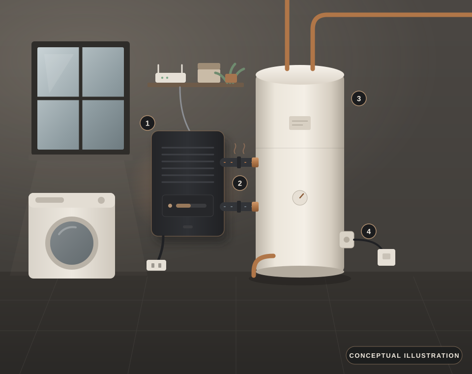

GridNua · Computing heat and the Irish home
Could your home do some of the work of a data centre?
Computers make heat. A few homes abroad already put it to use. GridNua follows what that could mean for Irish homes, independently and with the evidence shown.
No residential computing installation or programme is currently available through PlotNua in Ireland. GridNua follows how it is developing, here and abroad.
Part of The House as a Power Station

- 1 Compact computing unit
- 2 Insulated pipes carrying its heat
- 3 Existing hot-water cylinder
- 4 Existing immersion heater, still in place
The basic idea
- ComputeComputing equipment does useful work, for a company and its customers.
- HeatAlmost all the electricity it uses ends up as heat, which can be captured.
- HomeThat heat can warm water or rooms, instead of being thrown away.
Designs, sizes and arrangements differ from company to company, and none is available in Ireland.
Where it stands
From idea to everyday.
Every technology in GridNua carries two separate labels: how mature it is, and whether it is available in Ireland. Something can be operating commercially abroad and still be absent here.
- 01
Concept
An idea or design described in public, with no working equipment shown.
In the gallery: CYANIS household units
- 02
Prototype
Working equipment built and tested, but not yet placed in real homes or sites.
In the gallery: XFRA
- 03
In trials
Running in a limited number of real homes or sites, as a test.
In the gallery: HeatHub, myEko Pro
- 04
Operating commercially
Offered to customers as a service or product, in at least one country.
In the gallery: heata, Leaf Sites
- 05
Widely available
Readily available from several providers or installers.
No home technology in the gallery at this stage.
Technology Gallery
Who is doing it, and where.
Each entry is checked against the company's own published information, with the date we checked. Listed in alphabetical order. No rankings, no recommendations, no paid places.
-
Home energy and computing
CYANIS household units
CYANIS AI · Germany
A German AI-computing company that plans to run part of its work on small units in homes, linked to rooftop solar and batteries. It does not say how, or whether, the heat would be used in the home.
Where the heat goes: Not stated
- MaturityConcept
- In IrelandOperating elsewhere, not in Ireland
What we checked
- CYANIS describes three classes of sites: energy-site pods, industrial units 'with heat extraction', and household units ('Plug and play, behind the meter or grid-supplied').CYANIS Cloud – architecture · read 29 October 2026
- The rollout schedule on the CYANIS site states 'First home nodes live Q4 2026', two pods live March 2027, and 10 MW online by Q4 2027.CYANIS homepage · read 29 October 2026
- CYANIS AI launched CYANIS Cloud, a sovereign AI inference API, on 13 Oct 2026.CYANIS Newsroom · published 13 October 2026
- CYANIS AI states it has 150+ sites across Germany under LOI and is headquartered in Hamburg.CYANIS homepage · read 29 October 2026
Last checked 29 October 2026Official website -
Heat from computing
heata
heata · United Kingdom
A small cloud server fitted to a home's hot-water cylinder. Computing jobs run on it, and the heat goes into the stored water, so the existing boiler or immersion runs less often.
Where the heat goes: Hot water
- MaturityOperating commercially
- In IrelandOperating elsewhere, not in Ireland
What we checked
- heata says its servers are attached to hot-water cylinders in UK homes, with the heat transferred into the water in the cylinder.heata | free hot water for homes · read 29 October 2026
- The unit fits vented hot-water cylinders. heata says a version for unvented cylinders is in development.The heata unit - free hot water from cloud compute · read 29 October 2026
- The existing heating system stays in place and works alongside the unit. heata says installation can be done within a day and needs no plumbing.heata | free hot water for homes · read 29 October 2026
- heata won Pitch in Whitehall: Green Compute jointly with GoCodeGreen. The event was run by Startup Coalition with the Government Digital Service, and the prize is a pilot contract with government. heata says it will share more as the pilot takes shape.heata wins Pitch in Whitehall: Green Compute · published 9 October 2026
- Startup Coalition confirms heata and GoCodeGreen as joint winners of the green compute challenge. The final was held the week before the post.Pitch in Whitehall Crowns its Winners (Startup Coalition) · published 14 October 2026
- Centrica/British Gas ran a three-month trial with heata in 10 homes belonging to British Gas employees, with British Gas's own cloud workloads running on the units.British Gas partners with heata on trial to reuse waste heat from data processing (Centrica) · published 5 February 2025
Last checked 29 October 2026Official website -
Heat from computing
HeatHub
Thermify · United Kingdom
A unit packed with small computers that replaces a gas boiler. Thermify sells the computing to businesses and uses the captured heat for the home's heating and hot water.
Where the heat goes: Space heating
- MaturityIn trials
- In IrelandOperating elsewhere, not in Ireland
What we checked
- The Thermify FAQ says HeatHub cannot yet be bought: it is installed on a trial basis, with production and the first home installations targeted to start in 2027.Thermify News / FAQ · read 29 October 2026
- Thermify says HeatHub replaces a gas boiler and uses captured heat 'for warmth and hot water – on-demand'.Thermify – How it works · read 29 October 2026
- Thermify says it installed its first residential HeatHub as part of UK Power Networks' Ofgem-funded SHIELD project, and that its SHIELD commitment limits availability for other trial installations.Thermify News · read 29 October 2026
- Thermify says it retains ownership of the HeatHub and maintains it. Installation is expected to be offered on a ten-year lease.Thermify FAQ · read 29 October 2026
- UK Power Networks says SHIELD's third phase covers up to 300 social tenants on estates in the East and South East of England. All get solar and batteries, and about a third get a HeatHub. The phase runs over four years.UK Power Networks helping SHIELD vulnerable customers from fuel poverty · published 1 October 2025
- Partners named by UK Power Networks are Power Circle Projects, Eastlight Community Homes and Essex Community Energy CIC. Thermify is named as the source of the HeatHub technology.UK Power Networks SHIELD release · published 1 October 2025
Last checked 29 October 2026Official website
In Ireland today
Large sites, not homes.
Waste heat from computing is already used in Ireland, at the scale of a district rather than a house. No residential version is offered here yet.
Tallaght District Heating Scheme
Ireland's first large-scale district heating network. Waste heat from a nearby data centre is upgraded and piped to council buildings and TU Dublin's Tallaght campus. Homes are planned for a later phase.
- MaturityOperating commercially
- In IrelandLarge sites in Ireland, not homes
Why GridNua exists
Could this become an option for Irish homes?
That is the question GridNua is investigating. Nothing is offered yet, and we cannot say whether or when it will be. If it ever is, homeowners should be able to judge it on the evidence, not on a sales pitch.
What we are looking into
- Homes Which Irish homes might suit it: space, hot-water systems, electricity supply and broadband.
- Equipment Whether the designs operating abroad would meet Irish safety, noise and building standards.
- Arrangements How electricity, heat, maintenance and responsibility would be shared between a household and a provider.
- Rules What electricity, planning and consumer rules in Ireland would apply.
Interested?
See what your property already has.
The Residential Compute Readiness Check asks eleven questions and tells you what your property has, what is still to establish, and what nobody can answer yet. It is informational: it is not an application, and nothing is booked or promised.
Questions homeowners ask
What we know, and what nobody knows yet.
Is any of this available to Irish homes now?
No. We have not found any residential computing installation, programme or service offered to homes in Ireland. The technology in the gallery operates elsewhere, or at large sites rather than homes. If that changes, the gallery labels will change first.
Would it be noisy?
It depends on the design. Some equipment abroad is built to sit beside a hot-water cylinder indoors; other equipment is larger and sits outside or in a separate building. Noise is something any homeowner should see measured for the specific equipment before deciding.
Who pays for the electricity the equipment uses?
This is one of the first questions to ask any provider. Arrangements abroad differ from company to company, and none exists in Ireland yet, so there is nothing local to compare.
Would I be paid for hosting it?
GridNua makes no promises of payment, savings or income. Some services abroad describe benefits for the households that take part, but terms vary, they are not available in Ireland, and we do not repeat figures we cannot check for an Irish home.
What about my data and security?
The computing work belongs to the provider and its customers, not to the household. Questions worth asking: is the equipment kept separate from your home network, is the work encrypted, and who is responsible if something goes wrong.
What happens in summer, when the house needs less heat?
This is the hardest problem for computing heat in homes. Hot water is needed all year, which is why several designs abroad focus on the hot-water cylinder. What happens to surplus heat is a question to ask of any specific design.
What if the company stops trading?
It has happened before: an early Dutch service that put servers in homes to heat them closed in 2019. Ask who owns the equipment, who removes it, and what heats your water if it stops. Your existing heating should keep working on its own.
Would it affect my insurance or my home's heating grant?
Talk to your insurer before any equipment is installed. If your heating was installed with an SEAI grant, check the scheme's conditions with SEAI or your installer before connecting anything new to it.
About GridNua
How GridNua works.
Independent
GridNua is a new initiative within PlotNua. It has no commercial relationship with any company it describes, and no company can pay to appear or to be placed higher.
Evidence first
Entries are written by PlotNua from official sources, each with the date we checked it. What we could not confirm is said plainly. We do not publish earnings, savings or payment figures.
Kept current
Every entry has a review date. An entry that falls out of date is taken down until it is checked again. Spotted something wrong? Tell us.